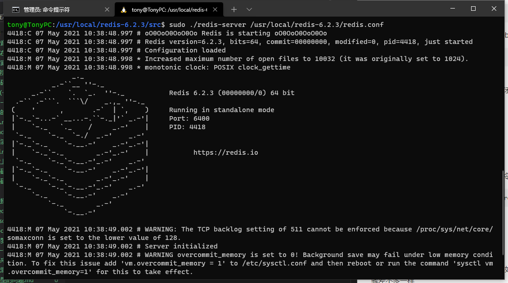

最近在极客时间上学习蒋德钧老师的《Redis核心技术与实战》地址如下：https://time.geekbang.org/column/intro/100056701，获益良多，这里先实名推荐下这个课程。
我这里分享一个在两个不同的Linux发行版系统上安装redis实例的方法，给不熟悉redis或者之前一直在用Windows环境下的redis实例的小伙伴缩短点折腾的时间。
首先链接linux实例后，查看下自己的linux的发行版信息，
1 | lsb_release -a |
我这里分别介绍下centos7和Ubuntu 20.04的环境下安装
1 | LSB Version: :core-4.1-amd64:core-4.1-noarch |
1 | Distributor ID: Ubuntu |
CentOS 7
- 检查GCC是否安装，如果没有安装，安装下GCC
1
yum install gcc
安装过程中如遇到提示，按提示输入y继续安装即可。
注意，在centos 7中默认安装的gcc版本是4.8.5，如果我们要安装的redis版本是5.0以上的版本，需要把gcc的版本进行下升级。可以输入如下命令查看当前gcc版本
1 | gcc -v 或者 gcc --version |
先列出一个参考链接https://baijiahao.baidu.com/s?id=1667197295239073048&wfr=spider&for=pc，然后为了避免以后链接找不到了，在我这里也重新罗列下升级操作。
1). 分别输入如下命令
1 | yum -y install centos-release-scl |
1 | yum -y install devtoolset-9-gcc devtoolset-9-gcc-c++ devtoolset-9-binutils |
2). 升级完成后，切换版本
1 | echo "source /opt/rh/devtoolset-9/enable" >> /etc/profile |
完成如上操作后，再次查看gcc版本，看到已经升级到9.x版本（注意升级完成后，可能需要重连下ssh才会正确打印）。
1 | [root@instance-a0uu0dv0 proc]# gcc -v |
GCC安装升级完成后，进入redis官方页面，下载redis安装包
https://redis.io/download官网页面有下载最新安装包的相关介绍和命令操作介绍，当前最新的操作是
1
2
3
4$ wget https://download.redis.io/releases/redis-6.2.3.tar.gz
$ tar xzf redis-6.2.3.tar.gz
$ cd redis-6.2.3
$ make安装完成后，即可运行redis实例
1
$ src/redis-server
如果服务器使用的是云服务器，可以调整下redis的配置文件，使本地可以连接测试。
1). 更改下默认端口（也可以不改）默认是6379，改一个自己定义的端口号1
2
3Accept connections on the specified port, default is 6379 (IANA #815344).
# If port 0 is specified Redis will not listen on a TCP socket.
port 6400
2). 以后台进程方式启动
修改daemonize no 为daemonize yes
1 | ################################# GENERAL ##################################### |
3). 设置redis远程连接
a、先放行你设置的端口号，一般在云服务器的安全组中设置
b、注释掉bind 127.0.0.1
1 | #bind 127.0.0.1 -::1 |
c、设置redis连接密码：在requirepass foobard改为requirepass 你的密码
1 | requirepass 1qaz2wsx |
4). 重启redis服务
启动redis，若你的redis已经启动，则先关闭，按以下方式进行关闭（关闭默认端口）
停止redis（关闭默认端口）：
./redis-cli shutdown
查找进程号并杀死进程：
ps -aux|grep redis kill -9 你找到的端口号
5). 重启redis的
指定配置文件启动，进src目录下，输入命令
1 | ./redis-server /usr/local/redis-6.2.3/redis.conf |
之后就可以在本地链接redis
Ubuntu 20.04
Ubuntu 20.04默认安装了最新版本的gcc，如果没有，就按如上方式安装一下，步骤差不多一样
同样的方式下载安装redis，并进行配置，完成后直接启动即可，高版本的发行版安装redis会更加的简单

好了大概就是这样。